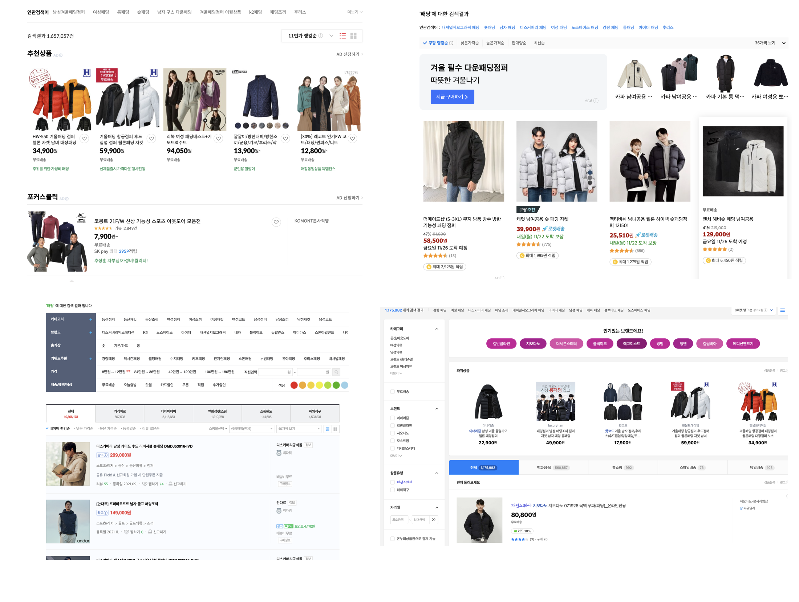

선택과 증거
Contents
7.1. 선택과 증거#
7.1.1. 의사결정과 선택#
사람들은 평생 살면서 정말 많은 결정(decision making)을 해야 합니다. “오늘 점심에 무었을 먹을지?”와 같은 사소한 결정에서 부터 자신의 진로, 인생의 동반자를 선택하는 중요한 결정에 이르기 까지 정말로 많은 결정들을 해야 합니다. 또한 자신의 맡고 있는 직책에 따라서 운전사는 경로를 선택하는 결정, 사장님은 투자에 대한 결정, 공무원은 정책에 대한 결정 등 인생을 살아가면서 다양하고 수많은 결정을 해야합니다.
대부분의 의사 결정은 여러 개 중에 하나를 고르는 선택인 경우가 많습니다. 여러분은 여러 개 중에 하나를 선택하는 경우 각 선택을 했을 때 나타날 수 있는 좋은 점과 나쁜 점들을 고려해서 의사결정을 할 것입니다.
다음 세 가지 예를 들어보겠습니다.
여러분이 온라인 쇼핑몰의 사장이라고 합시다. 지금 자신의 회사 온라인 판매 사이트의 디자인을 기존의 것에서 새롭게 바꾸려고 합니다. 아래 그림은 우리 나라의 대표적인 온라인 쇼핑몰에서 “패딩”을 검색했을 때 검색의 결과를 보여주는 결과입니다. 쇼핑몰마다 검색의 결과를 보여주는 화면이 모두 다릅니다. 검색의 결과를 보여주는 화면을 디자인하는 경우 검색 결과를 어떻게 배치할 지, 글자의 크기와 색깔은 어떤 것으로 할지 등을 결정해야 합니다.
2년전 부터 시작된 코로나 바이러스때문에 많은 백신이 개발되었습니다. 보건과 의료을 담당하는 국가기관은 제약회사들이 개발한 백신들의 효능과 안정성을 심사하여 백신의 사용에 대한 여부를 결정해야 합니다.
온라인 쇼핑몰의 디자인을 바꾸려는 사장님과 백신을 허가하는 국가기관의 업무는 얼핏 보기에 크게 공통점이 보이지 않을 수 있습니다. 특히 온라인 판매 사이트의 디자인을 바꾸는 경우 경영자와 웹 디자이너의 개인적인 역량과 의견에 영향을 받을 수도 있습니다. 하지만 우리는 이 장에서 의사결정의 과학적 절차 를 배워보면서 공통점을 찾아보려고 합니다.
예술적인 능력과 창의적인 아이디어에서 나오는 의사 결정과 선택도 매우 중요하지만 이 장에서는 데이터과학의 한 분야인 데이터에 기반한 의사결정의 과학적 절차 에 대하여 배울것입니다.

7.1.2. 증거의 크기#
7.1.2.1. 천동설과 지동설#
여러분은 천동설과 지동설에 대한 이야기를 한 번 쯤은 들어 보았을 것입니다. 사람들이 굳게 믿고 있던 천동설을 부정하고 지구가 태양을 중심으로 공전하고 있다고 주장한 지동설이 나온 과정은 필자가 어렸을 때 읽은 <대우주 이야기; 조경철 지음>에 다음과 같이 간력하게 설명되어 있습니다.
니콜라우스 코페르니쿠스는 지동설을 주장하여 근대 자연과학의 획기적인 전환, 이른바 ’코페르니쿠스의 전환’을 가져온 폴란드 혹은 프로이센 태생의 천문학자이다. 출간된 <천구의 회전에 관하여>에서 그는 지구와 태양의 위치를 바꿈으로써 지구가 더 이상 우주의 중심이 아님을 천명했는데, 이것은 당시 누구도 의심하지 않던 프톨레마이오스의 우주 체계에 정면으로 도전한 것이었다.
코페르니쿠스의 지동설 발표에 크게 놀란 사람은 당시 최고의 관측천문 학자로 이름을 날리던 덴마크 출신 티고 브라헤였다. 그는 지구가 태양을 끼고 돈다고 하면, 지구의 운동에 따르는 별들의 시차 효과를 관측할 수가 있다고 생각했다. 1572년에 나타났던 금성보다 밝은 신성을 관측했지만 시차를 검출할 수 없었다.
케플러는 대학에서 코페르니쿠스의 지동설을 믿게 되어 1596년에 그러한 내용을 그의 첫 저서인 ”천체의 신비”에서 밝혔고, 이어서 티코 브라헤의 조수 노릇을 하면서 브라헤가 남긴 방대한 관측자료를 정리, 연구한 끝에, 1609년에 출판한 ”새 천문학”에서 유명한 케플러의 제1법칙과 제2법칙을 발견하였고, 1619년에 출판한 ”세계의 조화”에서는 제3법칙을 발견하여, 태양을 중심으로 행성이 돈다는 지동설을 이론적으로 확립시켰다.
갈릴레오는 코페르니쿠스의 지동설을지지했다 하여 종교재판에 회부되어 죽을 때까지 종신금고형을 받았다. 그는 코페르니쿠스, 티코 브라헤, 키플러 등과는 달리 유일하게 망원경을 사용하여 천체 관측을 처음으로 한 사람이다. 1609년 그는 지름이 3cm 정도인 굴절망원경을 갖고 천체 관측을 시작하여 ”별의 메진저 ”라는 책을 썼다. 거기서 금성의 위상이 변화를 관측하여 바로 그것이 지구가 태양을 끼고 돌기 때문이라고 주장 했다.
여기서 강조하고 싶은 점은 당시 몇몇 학자들이 지동설을 주장하게 된 이유와 천동설을 굳게 믿고 있던 사람들이 지동설을 받아 들인 과정입니다.
망원경의 발달로 천문 학자들은 별들의 운동에 대한 방대한 데이터 를 수집할 수 있었습니다.
이러한 관측 데이터들이 “태양이 지구 주위를 돈다” 는 천동설의 가장 중요한 가정에 부합되지 않게 나타나는 경우가 많아지자 학자들은 천동설에 의심을 품게 됩니다.
결국 관측 데이터에 의한 천동설에 반대되는 증거들이 충분히 커지면서 사람들은 천동설을 버리고 지동설을 믿게 됩니다.
7.1.2.2. 유죄와 무죄#
우리가 법에 대하여 말할 때 많이 듣는 것 중에 하나가 무죄추정의 원칙 입니다. 재판에서 최종적으로 유죄라고 판정된 자만이 범죄인이라 불려야 하며, 단지 피의자나 피고인이 된 것만으로는 범죄인으로 단정할 수 없다는 원칙을 말합니다.
이 원칙은 인권보호의 의미로 생각할 수 있지만 제판의 결과, 즉 의사결정에 대한 절차로 본다면 사람들은 피의자가 무죄라는 가설 하에서 재판이 시작하는 것으로 생각할 수 있습니다.
판사는 피의자의 범죄 행위를 증명할 수 있는 충분한 증거가 있어야만 무죄라는 가설을 포기하고 유죄를 선고합니다. 이러한 사법 절차는 앞에서 본 지동설의 데이터와 같은 관측 자료는 없지만 수집한 객관적인 증거의 능력 또는 크기(strength od evidence) 에 따라서 의사 결정을 내리는 절차는 매우 유사합니다.
7.1.3. 데이터 기반의 의사결정#
이제 우리는 데이터에 기반한 통계적 의사결정에 대하여 알아보고자 합니다. 데이터에 기반한 통계적 의사결정의 절차는 다음과 같습니다.
상반되는 두 개의 가설이 있다.
천동설과 지동설
무죄와 유죄
두 개의 가설에 대한 공정하고 개관적인 데이터를 수집한다.
별들의 관측자료
범죄 수사에 대한 증거
수집한 데이터나 증거가 “기존의 생각” 또는 “처음부터 믿고 있던 가설” 에 반대되는 충분한 근거 가 있다면 기존의 가설을 포기한다.